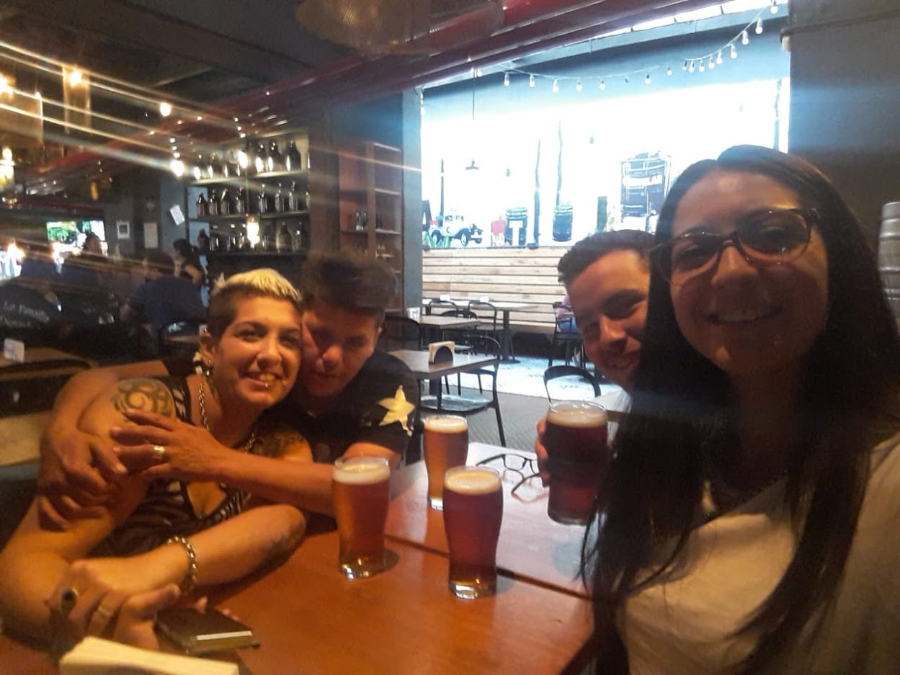
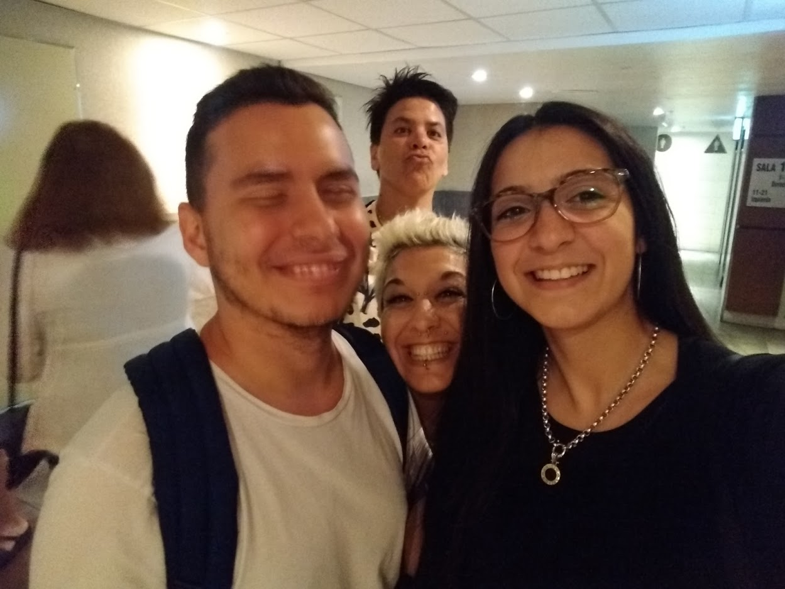
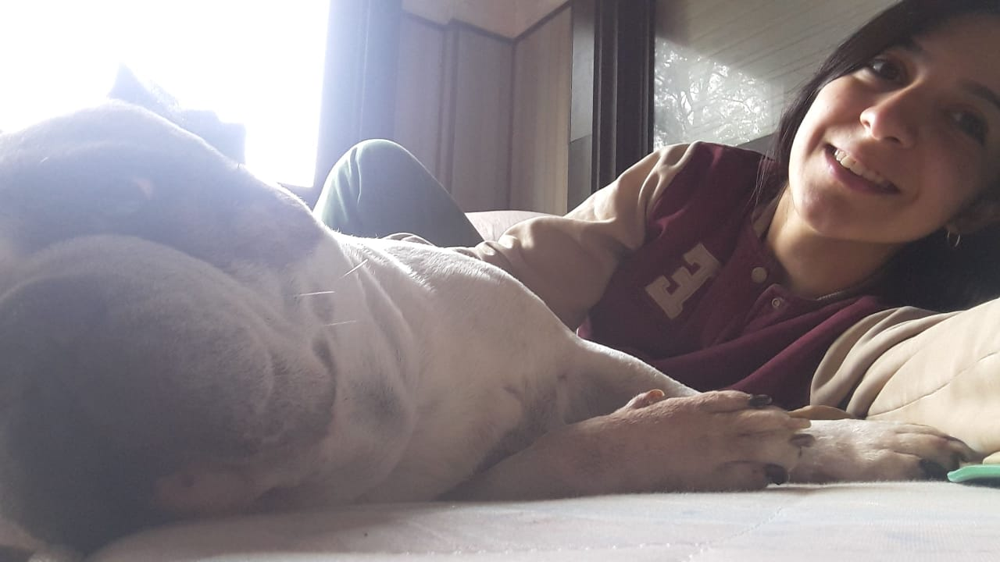
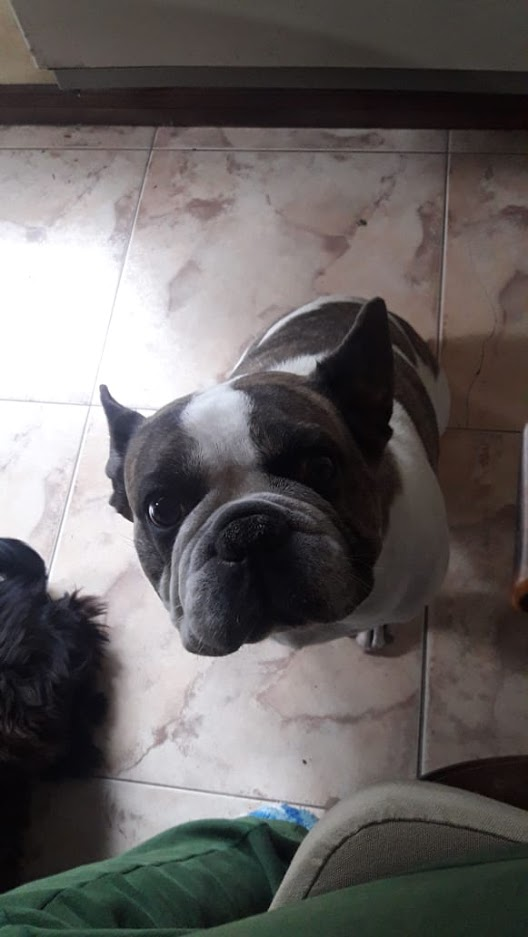
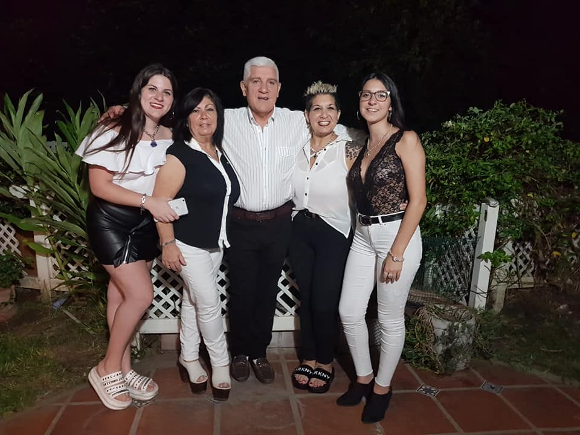

Qué hermosas bacterias que vinieron anoche al Maipo‼️😂 Gracias! A Camilo se lo llevó la 👮🏻 y si les duele algo, se toman un Imanol!😉 pic.twitter.com/HnhBhSUCpz
— Juampi González (@juampigon) October 1, 2017

Holiiiis gracias por tantas saluias juntos aunque te sorprendiera que nunca
me molestara moverme
todo
el dia con ustedes haciendo cosas,
estamos en un momento particular pero fue como aprovechar a salir todo lo que podiamos
antes de que
pasara esta pandemia con vos y tus hermanas que fue casi como formar parte de tu familia y eso siempre
lo
voy a agradecer.

 Nunca voy a olvidar a este dios que tanto te hizo feliz y que yo pude conocer por primera vez, creo que gracias a el amor que le tenes a esos perros me pegaste esa forma de amor especial con perros de esas razas jaja, segui disfrutando de cosas simples como el el cariño de tu familia aunque aveces sean pesados y no los aguantes, pero despues esas cosas son las que mas uno recuerda, sobre todo en tu cumple que como yo, hasta debes estar mas sensible😅.

 Esta quizas es una sorpresa algo inusual para un cumpleaños pero nada mejor que practicar algo de programacion y a la vez hacerte algo especial por tu cumple ya que es lo minimo que puedo hacer en este dia por vos con todo lo que compartimos, yo te deseo lo mejor, si se pudiera te invitaria a comer sushi y hablar de todo como siempre. Se que es año fue dificl para todos pero mas para tu familia en particular, por eso pongo esta ultima foto, porque espero que siempre sigan asi de juntos y unidos aunque seas la mas fria de la familia que aveces se vuelve de papel gracias a la peli UP o como cuando te vi llorando viendo un casamiento por facebook. Es una forma muy creativa de hacer una carta esta jaja pero quiero que sepas que siempre vas a poder contar conmigo sea la situacion que sea como siempre te ayude en todo lo que pude, sos muy importante para mi y te quiero mucho, te deseo un gran feliz cumple con tu familia y si hoy estas muy sensible permitite estarlo por algo lindo como tu dia con lo que cuesta jajaja, se que en algun momento cuando todo este mejor podremos arreglar para tomar o para invitarte a comer sushi como siempre con ale o con ro jaja. Me siento un poco falta con no haber podido ni siquiera por estar con vos en tu momentos mas duros en este año y se que esto no lo compensa pero espero que te haya gustado porque estuve varias horas haciendo esto jaja, no me vuelvas a hacer eso de dejarme con solo una opcion como con tu sorpresa porque es super injusto, aunque lo haya amado pero eso no lo justifica, o si jaja que disfrutes tu dia.